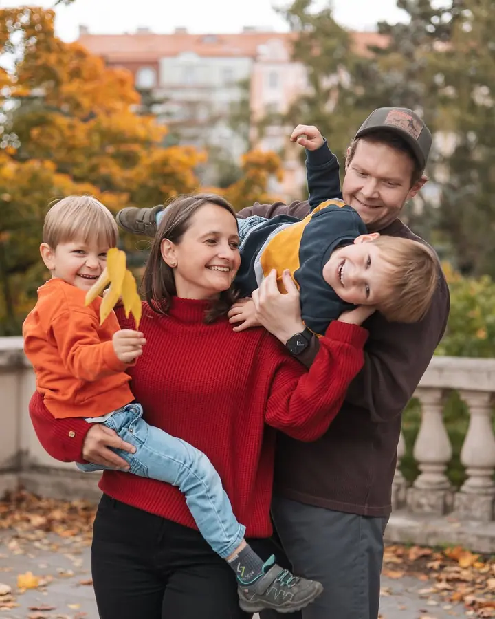
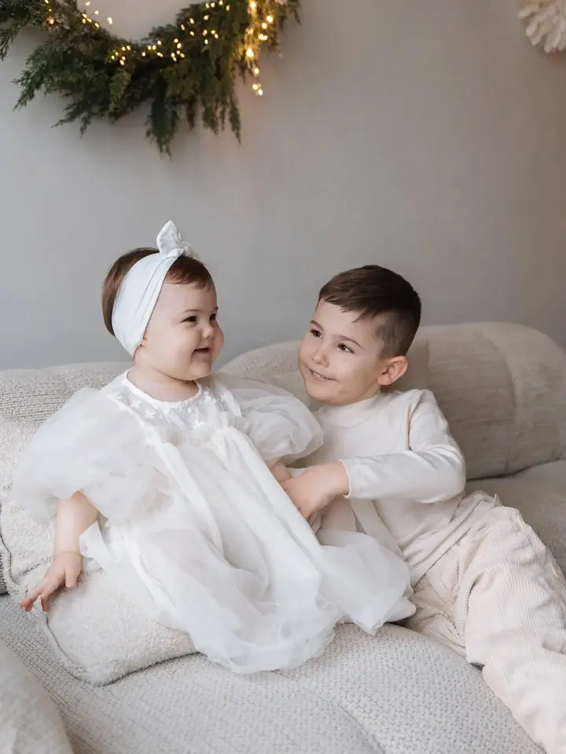
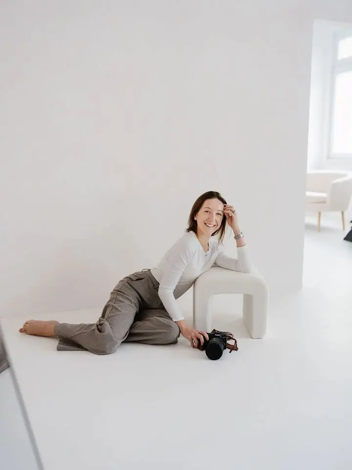

Rodinné focení
Ať jsou dětem čtyři, nebo patnáct, rodina se mění rychleji, než stihneme mrknout. Fotím obyčejné všední chvíle mezi vámi, venku v přírodě nebo u vás doma.

Jmenuji se Klára Palm Hanzl a fotím rodiny, maminky v očekávání i zamilované páry v Liberci, v Praze a kdekoli, kam mě pozvete. Nehledám dokonalé pózy, ale skutečné emoc…
Rezervovat termínJsem Klára. Nejsem jen máma, jsem taky podnikatelka, tvořivá duše a snílek, který stojí nohama pevně na zemi. Všechny tyhle role se v mé práci přirozeně prolínají. Věřím, že nejkrásnější věci v životě nemusí křičet, jen potřebují prostor nadechnout se.


Fotím hřejivé lifestylové příběhy rodin a párů. Focení probíhá v uvolněné atmosféře bez nuceného pózování: děti můžou být samy sebou, páry se soustředí jeden na druhého a rodiče si často kromě fotek odnesou i hezky strávený společný čas. Nejraději fotím venku v přírodě nebo u vás doma, kde se cítíte nejpřirozeněji.
Kromě rodin vytvářím vizuální obsah pro značky a jedinečná ubytování. Píšu o podnikání bez honičky, o našem cestování s dítětem a o tom, jak může vypadat život, když se rozhodneme žít vědoměji.
Co fotím
Ať jsou dětem čtyři, nebo patnáct, rodina se mění rychleji, než stihneme mrknout. Fotím obyčejné všední chvíle mezi vámi, venku v přírodě nebo u vás doma.
První dny s miminkem v klidu vašeho domova. Bez spěchu a bez aranžování, prostě takové, jaké opravdu jsou.
Od nervózního napětí kolem velké otázky až po tichou blízkost, kdy jste spolu jen vy dva. Žádné strojené pózy, jen váš skutečný příběh.
Krásné období čekání a rostoucího bříška, uchované na fotkách, které vám zůstanou i ve chvíli, kdy drobné detaily z paměti vyblednou. Po těhotenském focení vám dám na focení miminka slevu 500 Kč.
Postup
Každý příběh začíná jednoduchou zprávou. Napište mi, co byste si přáli fotit, a společně vybereme termín i místo.
Fotíme venku v přírodě, u vás doma, nebo v moderním ateliéru. Každé focení přizpůsobím vaší rodině nebo vám dvěma.
Focení trvá hodinu a probíhá v klidu. Dám vám jednoduché pokyny, ale hlavně vás nechám být sami sebou.
Z náhledové galerie si sami vyberete 15 fotek, které pečlivě upravím. Hotovou galerii ke stažení dostanete do 1 až 2 týdnů.
Otázky
Lifestylové focení stojí 2 900 Kč, v ateliéru 4 500 Kč. Cena zahrnuje hodinu focení, 15 upravených fotek a online galerii ke stažení.
Nejčastěji v Liberci a okolí a ráda za vámi přijedu i do Prahy. Pro větší projekty vyrazím kamkoli po Česku i do zahraničí.
Upravenou galerii z rodinného nebo lifestylového focení dostanete do 1 až 2 týdnů.
Vůbec ne. Nepotřebujete umět pózovat, focení je o vašich skutečných chvílích spolu. Dám vám jednoduché pokyny a zbytek přijde sám.